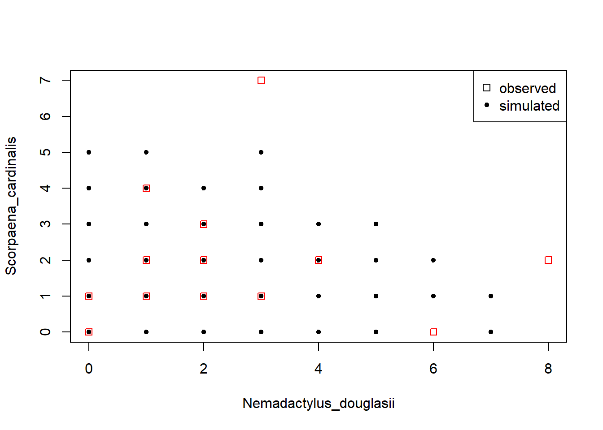

Prepare analysis
To run this code you will need to install the pacman R package beforehand but this will take care of all the other packages required.
pacman::p_load(
corrplot,
here,
readxl,
data.table,
ecodist,
dplyr,
magrittr,
stringr,
parallelDist,
ggplot2,
usedist,
vegan,
rgl
)you can load the data from here …
dt_fish <- read_excel(path = "../../../../../Supplementary Informations/Anderson19Copula/ece34948-sup-0001-tables1.xlsx",
skip = 1)Here I load the function provided in the supplementary materials of Anderson et al. 2019. The original third code file also contains an example use case. I split the file into one containing the functions which we load here and another one which contains the example use case. The delineation is made clear in the RCode3.R file.
source("../../../../../Supplementary Informations/Anderson19Copula/RCode1.R")
source("../../../../../Supplementary Informations/Anderson19Copula/RCode2.R")
source("../../../../../Supplementary Informations/Anderson19Copula/RCode3_functions.R")##
## Attache Paket: 'MASS'## The following object is masked from 'package:dplyr':
##
## select##
## Attache Paket: 'extraDistr'## The following objects are masked from 'package:ZIM':
##
## dzinb, dzip, pzinb, pzip, qzinb, qzip, rzinb, rzipWhat unique seasons are in the data? The select verb from dplyr is explicitly loaded from dplyr through the :: sign because the MASS package which will be loaded inside the chooseDistr() function also contains a select() function which will mask dplyr’s.
vec_unique_seasons <-
dt_fish %>%
dplyr::select(Time) %>%
pull() %>%
uniqueDefine a function to: 1. Subset data to a certain value of the variable “Time”, 2. remove the two Variables Sample and Time, and 3. convert the result to a matrix. The last step is done because the chooseDistr() function requires a matrix as input. This is done in a function to adhere to the DRY principle: Don’t repeat yourself. Which mean that in coding you should avoid writing the same lines of code over and over again to apply them to different objects. This would make it very cumbersome to fix errors and also to rerun the analysis.
tbl_to_mat <- function(sub){
out <- filter(dt_fish, Time == sub) %>%
dplyr::select(-c(Sample, Time)) %>%
as.matrix()
}The original season names have dots (.) in them. In coding in general you should avoid dots in the names of objects. In R this is not really a problem but in other languages they can cause errors, so its a good habit to use underscores instead.
for (i in vec_unique_seasons){
cr_new_i <- i %>%
str_replace(pattern = "\\.", replacement = "_") %>%
str_to_lower()
assign(x = paste0("mt_",cr_new_i),
value = tbl_to_mat(sub=i))
rm(i, cr_new_i)
}In this loop we first remove species that do not occur in the subsets (i.e. where the sum of the column is zero). They would cause errors in the chooseDistr() function. Afterwards we call the function on each matrix.
for(i in ls()[grepl(pattern="mt", x = ls())]){
mt_loop <- get(i)
rm_id <- which(colSums(mt_loop) == 0)
if (length(rm_id) != 0) mt_loop <- mt_loop[,-rm_id]
l_cd_out <- chooseDistr(Y = mt_loop)
df_cd_out <- l_cd_out$marginals
cr_save_name_part <- paste(str_split_fixed(string=i,pattern="_",n=3) %>% .[,2:3], collapse = "_")
cr_save_name <- paste0("df_", cr_save_name_part)
assign(x=i, value=mt_loop)
assign(x=cr_save_name,value=df_cd_out)
rm(i, mt_loop,l_cd_out,df_cd_out,cr_save_name_part,cr_save_name,rm_id);gc()
}Now we now the optimal marginal distributions for each species and can turn to the significant pair-wise associations. The function is not well written and occasionally returns an error. To avoid having to run in manually over and over again I wrote a while loop.
pwa_sep_98 = pairWise(
mt_sep_98,
nperm = 99999,
alpha_type = "PCER",
graphic = FALSE,
sig_level = 0.01
)
pwa_sep_99 = pairWise(
mt_sep_99,
nperm = 99999,
alpha_type = "PCER",
graphic = FALSE,
sig_level = 0.01
)
pwa_mar_99 = pairWise(
mt_mar_99,
nperm = 99999,
alpha_type = "PCER",
graphic = FALSE,
sig_level = 0.01
)We can construct correlation plots just like in the publication. For Index of the observed association (IoA),
corrplot(pwa_sep_98$IoA.obs, diag = FALSE, type = "lower", tl.cex = 0.8, tl.srt = 45, tl.col = "black")the shrunken IoA and
corrplot(pwa_sep_98$IoA.shrunk, diag = FALSE, type = "lower", tl.cex = 0.8, tl.srt = 45, tl.col = "black")
the subset of statistically significant IoAs:
corrplot(pwa_sep_98$IoA.subset, diag = FALSE, type = "lower", tl.cex = 0.8, tl.srt = 45, tl.col = "black")
add species column. Later functions require this column.
df_sep_98$Species <- rownames(df_sep_98)
df_mar_99$Species <- rownames(df_mar_99)
df_sep_99$Species <- rownames(df_sep_99)ids of significant pairwise associated taxa
s98mt_id <- which(colnames(mt_sep_98) %in% pwa_sep_98$associated)
s98df_id <- which(rownames(df_sep_98) %in% pwa_sep_98$associated)
m98mt_id <- which(colnames(mt_mar_99) %in% pwa_mar_99$associated)
m98df_id <- which(rownames(df_mar_99) %in% pwa_mar_99$associated)
s99mt_id <- which(colnames(mt_sep_99) %in% pwa_sep_99$associated)
s99df_id <- which(rownames(df_sep_99) %in% pwa_sep_99$associated)new data sets that only hold these subsets
mt_sep_98_assoc <- mt_sep_98[,s98mt_id]
mt_mar_99_assoc <- mt_mar_99[,s99mt_id]
mt_sep_99_assoc <- mt_sep_99[,s99mt_id]
df_sep_98_assoc <- df_sep_98[s98df_id,]
df_mar_99_assoc <- df_mar_99[s99df_id,]
df_sep_99_assoc <- df_sep_99[s99df_id,]li_copula_sep_98 <- estimate_copula(data = mt_sep_98_assoc,marginal_details = df_sep_98_assoc)
li_copula_mar_99 <- estimate_copula(data = mt_mar_99_assoc,marginal_details = df_mar_99_assoc)
li_copula_sep_99 <- estimate_copula(data = mt_sep_99_assoc,marginal_details = df_sep_99_assoc)Extract the MLE correlation matrix from the mcem_result list.
corr_mcem_sep_98 <- li_copula_sep_98[["cov_final"]]
corr_mcem_mar_99 <- li_copula_mar_99[["cov_final"]]
corr_mcem_sep_99 <- li_copula_sep_99[["cov_final"]]We need to add the unassociated species back into the covariance matrix
add_unass <- function(data, spe_names) {
new_names <- setdiff(spe_names, row.names(data))
n_new <- length(new_names)
n_old <- ncol(data)
mt_add1 <- matrix(0, ncol = ncol(data), nrow = n_new)
mt_add2 <- matrix(0, ncol = n_new, nrow = nrow(data))
data <- rbind(data, mt_add1)
row.names(data)[(n_old+1):(n_old+n_new)] <- new_names
mt_add2 <- matrix(0, ncol = n_new, nrow = nrow(data))
data <- cbind(data, mt_add2)
colnames(data)[(n_old+1):(n_old+n_new)] <- new_names
diag(data) <- 1
return(data)
}corr_mcem_sep_98_add <- add_unass(data = corr_mcem_sep_98, spe_names = rownames(df_sep_98))
corr_mcem_mar_99_add <- add_unass(data = corr_mcem_mar_99, spe_names = rownames(df_mar_99))
corr_mcem_sep_99_add <- add_unass(data = corr_mcem_sep_99, spe_names = rownames(df_sep_99))At this stage we can easily simulate new data sets from our copulas.
# How many simulations?
N = 100
simulated_data_sep_98 =
generate_copula_data(N, marginal_details = df_sep_98, cov = corr_mcem_sep_98_add)
species_indices <- sample(x = colnames(mt_sep_98), 2)
pch <- c(rep(0, nrow(mt_sep_98)), rep(20, N))
plot(rbind(mt_sep_98[ , species_indices], simulated_data_sep_98[["observed"]][ , species_indices]), pch = pch, col = c(rep("red", nrow(mt_sep_98)), rep("black", N)))
legend(x = "topright", pch = c(0, 20), legend = c("observed", "simulated"))
n_sim = 100
n_g1 = nrow(mt_sep_98)
n_g2 = nrow(mt_mar_99)
n_g3 = nrow(mt_sep_99)
seas_var = append(rep(vec_unique_seasons[1], n_g1), rep(vec_unique_seasons[2], n_g2))
seas_var = append(seas_var, rep(vec_unique_seasons[3], n_g3))
dt_base = data.table(Sample = 1:56, Time = seas_var)
sim_list = list()
sim_list[[1]] = setDT(dt_fish)
sim_list[[1]][,null_model := FALSE]
for (i in 1:(2*n_sim)){
ld_s98 <-
generate_copula_data(n_g1, marginal_details = df_sep_98, cov = corr_mcem_sep_98_add)
ld_m99 <-
generate_copula_data(n_g2, marginal_details = df_mar_99, cov = corr_mcem_mar_99_add)
ld_s99 <-
generate_copula_data(n_g3, marginal_details = df_sep_99, cov = corr_mcem_sep_99_add)
mat_new = rbindlist(list(
as.data.frame(ld_s98[["observed"]]),
as.data.frame(ld_m99[["observed"]]),
as.data.frame(ld_s99[["observed"]])
), fill = T)
for (j in seq_len(ncol(mat_new)))
set(mat_new, which(is.na(mat_new[[j]])), j, 0)
mat_new = cbind(dt_base, mat_new)
mat_new[, Time := paste0(Time, "_", i)]
mat_new[, null_model := FALSE]
if (i <= n_sim){
sim_list[[i+1]] = mat_new
} else{
shuffle = sample(1:nrow(mat_new),nrow(mat_new))
mat_new$Time = mat_new$Time[shuffle]
mat_new[, null_model := TRUE]
mat_new[, Time := paste0(Time, "_n", i-n_sim,"")]
sim_list[[i+1]] = mat_new
}
rm(mat_new)
}
sim_mat = rbindlist(sim_list, use.names = TRUE)
sim_mat[, Time := factor(Time)]
d_super = parallelDist(x = as.matrix(sim_mat[,-c(1,2)]), method = "bray", threads = 2)
centroids = betadisper(d_super, sim_mat$Time, type = "centroid")seas_vec = rownames(centroids$centroids)
o_id = which(!str_detect(seas_vec, "_"))
null_id = which(str_detect(seas_vec, "n"))
seas_vec[null_id] = "null model"
seas_vec %<>% str_remove("_.*")
plot_data = data.frame(axis1 = centroids$centroids[,1],
axis2 = centroids$centroids[,2],
axis3 = centroids$centroids[,3],
season = factor(seas_vec),
og = FALSE)
plot_data$og[o_id] = TRUEp12 = ggplot(data= filter(plot_data, season != "null model"), aes(x = axis1, y = axis2, col = season)) +
stat_density_2d(aes(fill = ..level..), geom = "polygon", alpha = 0.5) +
geom_point(aes(shape = season)) +
geom_point(data = filter(plot_data, og == TRUE), col = "black", size = 0.5) +
theme_classic()
p13 = ggplot(data= filter(plot_data, season != "null model"), aes(x = axis1, y = axis3, col = season)) +
stat_density_2d(aes(fill = ..level..), geom = "polygon", alpha = 0.5) +
geom_point(aes(shape = season)) +
geom_point(data = filter(plot_data, og == TRUE), col = "black", size = 0.5) +
theme_classic() +
theme(legend.position = "none")
p23 = ggplot(data= filter(plot_data, season != "null model"), aes(x = axis2, y = axis3, col = season)) +
stat_density_2d(aes(fill = ..level..), geom = "polygon", alpha = 0.5) +
geom_point(aes(shape = season)) +
geom_point(data = filter(plot_data, og == TRUE), col = "black", size = 0.5) +
theme_classic()+
theme(legend.position = "none")
p12_leg = cowplot::get_legend(p12)
cowplot::plot_grid(p12 + theme(legend.position = "none"),
p13,
p23,
p12_leg)
p12 = ggplot(data= plot_data, aes(x = axis1, y = axis2, col = season)) +
stat_density_2d(aes(fill = ..level..), geom = "polygon", alpha = 0.5) +
geom_point(aes(shape = season)) +
geom_point(data = filter(plot_data, og == TRUE), col = "black", size = 0.5) +
theme_classic()
p13 = ggplot(data= plot_data, aes(x = axis1, y = axis3, col = season)) +
stat_density_2d(aes(fill = ..level..), geom = "polygon", alpha = 0.5) +
geom_point(aes(shape = season)) +
geom_point(data = filter(plot_data, og == TRUE), col = "black", size = 0.5) +
theme_classic() +
theme(legend.position = "none")
p23 = ggplot(data= plot_data, aes(x = axis2, y = axis3, col = season)) +
stat_density_2d(aes(fill = ..level..), geom = "polygon", alpha = 0.5) +
geom_point(aes(shape = season)) +
geom_point(data = filter(plot_data, og == TRUE), col = "black", size = 0.5) +
theme_classic()+
theme(legend.position = "none")
p12_leg = cowplot::get_legend(p12)
cowplot::plot_grid(p12 + theme(legend.position = "none"),
p13,
p23,
p12_leg)
colors3d = c('royalblue1', 'darkcyan', 'oldlace', "gray")
plot_data$color <- colors3d[ as.numeric(plot_data$season) ]
plot3d(x = plot_data$axis1, y = plot_data$axis2, z = plot_data$axis3, col = plot_data$color, type = 's',
radius = .005)